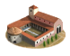
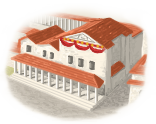
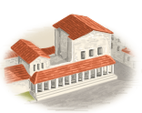
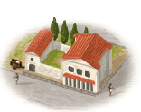

Government
Every settlement you control needs a government building, which determines how the region is ruled. The government affects what buildings can be built and how the settlement develops across three areas:
- Economy: tax and trade income
- Public order: law, unrest, cultural conversion
- Recruitment: which units can be trained
A government must be in place before you can build, recruit, or earn money from a settlement, so it’s the first decision you make for every settlement you take. Remember to also destroy treasuries when capturing capital cities.
Government types
| Government | Strengths | Weaknesses | Recruitment | |
|---|---|---|---|---|
 | Homeland | Best economy and recruitment of any government | Can only be built in a faction’s designated home regions | Full factional and AoR roster |
 | Direct Rule | Full development: strong income and law bonuses, full building availability, higher cultural conversion. | High cost; unrest rises as the settlement grows | All factional units, few AoR units |
 | Indirect Rule | A balance between Direct Rule and Dependency | Balanced | A mix of factional and AoR units |
 | Dependency | Quick control: low cost and higher happiness | Lower tax/trade income, and cultural conversion | Mostly AoR units |
| Abandon Settlement | Settlement control passes to another faction or rebels, depending on starting ownership. | You give up direct control of the region, regions can be taken over by hostile factions. | None |
Strategic considerations
Specialise your settlements. Developing a settlement takes considerable investment, so decide early whether each one should be an economic centre or a recruitment hub, and choose its government to match.
Match the government to the settlement. A large, wealthy city may earn the most under Direct Rule, but only if you can keep its unrest under control. A distant or unstable province may be easier to hold as a Dependency.
Review your governments regularly. You can demolish a government and build a new one in a single turn. As your settlements grow and your empire expands, a government that suited a settlement early on may stop being the best choice.
Starting governments are historical, not optimal. Each settlement’s starting government is based on historical research. It may not suit your play style or your plans, so feel free to change it.
Treasury
In your capital, and only your capital, you can build treasury buildings offering further economic buffs. If you change your capital, the old treasury will stop working on the next turn and can be destroyed. If you capture another faction's capital, that treasury will also give no bonus, so ensure to destroy it for the money; this represents you looting the enemy's treasury.
Government buildings
| Chain | Levels | Excl. | What it is | |
|---|---|---|---|---|
| Government (liberation) | 1 | 1 | To free a people is to keep them as friends | |
| Government (dependency) | 1 | 1 | Dependent polity or integrated ally | |
| Government (indirect rule) | 1 | 1 | Indirect Rule through local elites | |
| Government (direct rule) | 1 | 1 | Direct Rule | |
| Government (homeland) | 1 | Homeland | ||
| Capital Treasury | 4 | Where we store all our gold! |